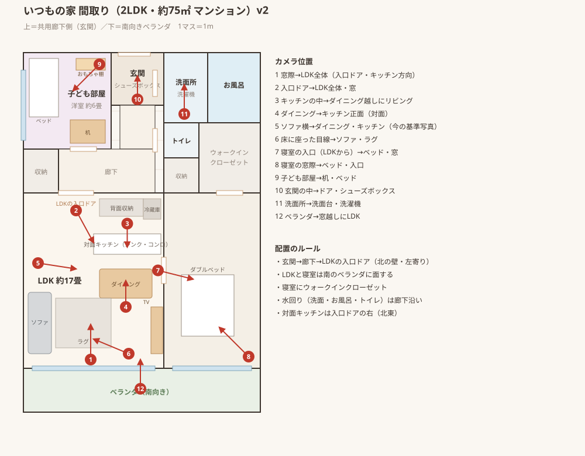

バズ撮り 制作用・関係者限定
素材ライブラリ
撮影ガイドのカット素材を作るための「いつもの女性」と「いつもの部屋」。すべてAIで生成したオリジナルです（実在の人物・部屋ではありません）。
いつもの女性
正面の1枚を基準に、向き・表情・動作を揃えて作りました。タップで拡大できます。
- 人物30代前半・暮らし系インフルエンサーのママ
- 髪ダークブラウンのミディアム、ゆるいウェーブ
- 服クリーム色のリブニット＋ベージュのワイドパンツ
- 足元オートミール色の靴下（室内なので靴は履かない）
向き
表情
動作
いつもの部屋（LDK・最初の6枚）
人がいない状態で、同じ部屋を6つのアングルから。家具の位置・色・光の向きが揃っています。
- 床・壁明るいオーク材の床、白い壁
- 家具オークのダイニングテーブルと椅子、ライトグレーのソファ、グレーのラグ
- 小物観葉植物、白いペンダントライト、白いキッチンカウンター
- 光左側の大きな窓から、やわらかい自然光
いつもの家（2LDK・間取りつき）
間取りを先に決めて、図の番号の位置から撮ったアングルです。写っていない場所もブレないように、家具の配置を固定しています。

カメラ位置ごとのアングル
Soul ID（顔の学習） 学習中
上の12枚でHiggsFieldの「Soul ID」を学習させています。学習後は、どんなポーズ・場所でも同じ顔で作れるようになります。
次に作るもの
- 撮影ガイドで「イラスト準備中」の12動作（扉をあける・引き出しを開ける・手を洗う など）を、この女性と部屋で作る
- キッチン・寝室・玄関・洗面所など、ほかの場所の「いつもの部屋」を同じ方法で作る
- 静止画を開始画像にして、カット動画にする